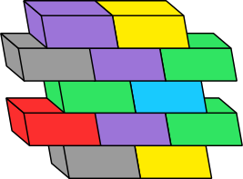

About Me
Loading data from GitHub ...
<---- Made short times
Hi I am
I am a/an Human
About Me
Loading data from GitHub ...
<---- Made short times
minimalist
I have experience working for
and also freelancing

& doing passionate
open-source projects in my free time